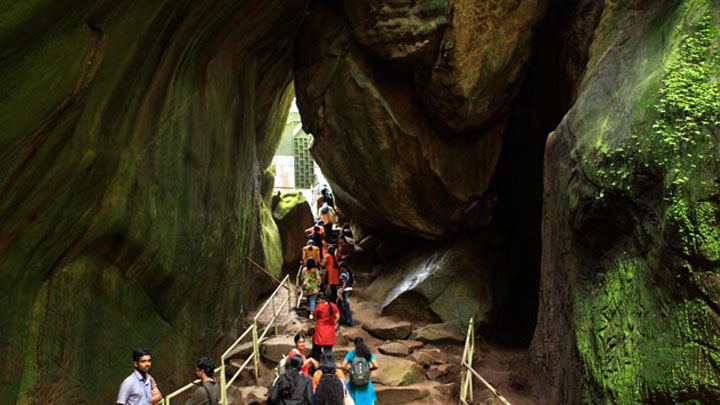
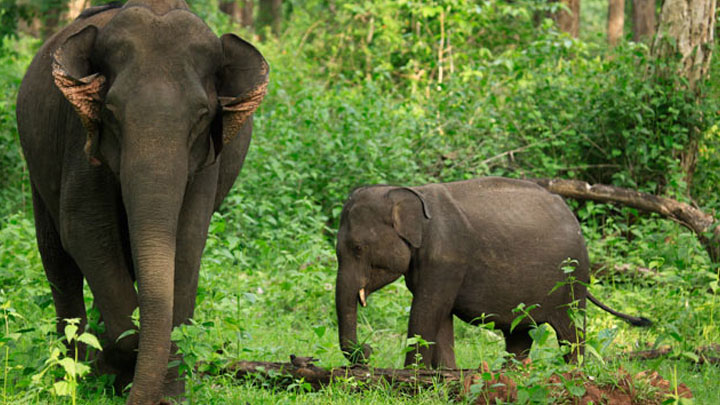
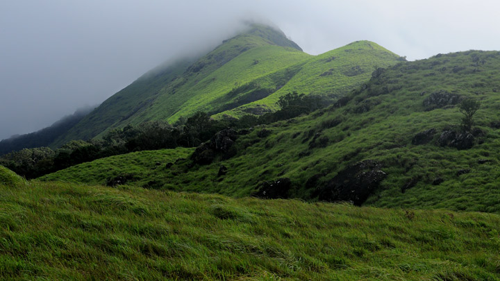

Top 5 places to visit in Wayanad
Edakkal Caves
A trip to Edakkal Caves is like a journey into our forgotten past. Located 10 kms from Sulthan Bathery, they have provided historians with great information regarding the lives and habits of our ancestors. The caves are two natural rock formations believed to have been formed by a large split in a huge rock. The carvings inside are extremely beautiful. A trek up the majestic Ambukuthi Hills is required to reach these caves. The aroma of coffee stays with you the entire way. It is truly a surreal experience as we step into the palms of history.

Tholpetty Wildlife Sanctuary
Tholpetty Wildlife Sanctuary or Wayanad Wildlife Sanctuary is a beautiful destination located 20 km east of Mananthavady on the Kodagu Road. The jeep ride here offers brilliant opportunities to view various animal and bird species in their natural habitat. One gets to see herds of elephants, guars, deer, monkeys, tigers, leopards, bears and many species of reptiles, fishes, butterflies and birds including vultures. Visitors are restricted to the outer tourist zone. It gives one an excellent perspective on how we must strive to conserve these natural wonders.

Kuruva Island
Kuruva Dweep or Kuruva Island is a protected river delta, comprising a cluster of islands over the middle of Kabini River in Wayanad. Spread over 950 acres of land, Kuruva Island is densely populated with rich flora and fauna. The geographical peculiarity of this island makes this place evergreen with a serene ambience.
Dwelling deep into this island, you can sight many attractive things like bridges made up of bamboo trees and other rare species of trees. The uninhabited island is home to rare species of birds, orchids, herbal plants etc. Coming so much closer to the nature, you might be feeling Kuruva Island as a nature's gift to Wayanad.
The island is surrounded by streams and you can have a boat ride or rafting through this stream enjoying the enchanting beauty of the island. The boats and rafts are provided by the Kerala Tourism Department and it will take few hours to cover each and every island. Tourists from different parts of the world enjoy the rafting here. The rafts are made up of bamboos providing you a thrilling and exciting journey through the streams.

Chembra Peak
Chembra is the highest peak in Wayanad district and lives up to its billing of being a picturesque location. It has managed to maintain its pristine nature over the years. Situated 2100 m above sea level, this peak offers a breath-taking view of rare flora and fauna. One can come across many exotic species in these parts. The route to the peak itself has a brilliant view along with a heart shaped lake, waterfalls and lush greenery the whole way. It is a prime spot for trekking but prior permission needs to be taken before going on these treks. Guided tours are available and can help in enhancing the entire experience.

Banasura Sagar Dam
Banasura Sagar dam across the Karamanathodu River, a tributary of River Kabini, in Kalpetta, is considered to be the largest earth dam in India and the second largest in Asia. The dam is ideally placed in the foothills of Banasura hills, which got its name from 'Banasura', the son of King Mahabali, the famous ruler of Kerala. It is said that 'Banasura' undertook severe penance on the top of the hills. Banasura hill is the third largest peak in the Western Ghats.
The dam here was constructed on behalf of the Banasurasagar project in 1979, to support the Kakkayam Hydroelectric power project to meet the water demand for irrigation and drinking purposes. The dam, located around 21 km away from Kalpetta is a beautiful tourist destination in Wayanad. Banasura dam is made up of massive stacks of stones and boulders.
One of the beautiful sights here is the set of islands in the dam's reservoir, which was formed when the reservoir submerged the surrounding areas during monsoon season. These islands with the Banasura hills in the background are a visual treat for those who visit the dam and its premises. Because of this peculiarity, tourists are attracted towards this destination. The dam is very close to Karalad Lake, another tourist hotspot in Wayanad.